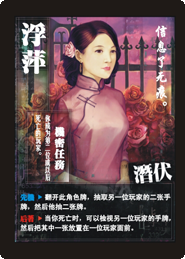

Fu Ping
Secret Green Mission
- Be the second player or thereafter to die.
Character Abilities
- 潛伏: Hidden Character
- 先機: Flip up this character card. If you do, take two cards from another player's hand. That player then draws one card from the library.
- 後著: When you die, you may look through another player's hand and select one card to place onto a player's message board.